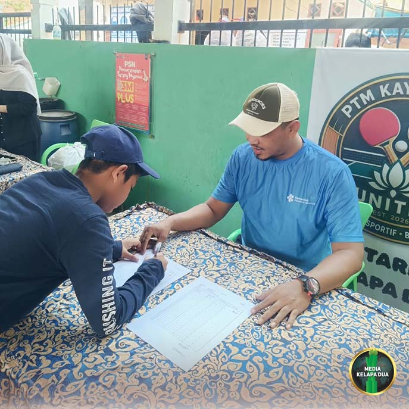

MediaKada | Dalam upaya meningkatkan layanan kesehatan masyarakat sejak dini, khususnya bagi kalangan remaja, Posyandu Remaja RW 08 Kelurahan Kelapa Dua rutin menyelenggarakan kegiatan pelayanan kesehatan setiap bulan. Kegiatan tersebut dilaksanakan pada minggu kedua setiap bulannya di Sekretariat RW 08, Jalan Kayumanis IV RT 005/08, Kelapa Dua, Kebon Jeruk, Jakarta Barat, Sabtu (17/10).
Pelaksanaan Posyandu Remaja dipilih pada hari Sabtu karena bertepatan dengan waktu libur sekolah, sehingga para remaja dapat mengikuti kegiatan dengan lebih leluasa. Selain memperoleh layanan pemeriksaan kesehatan, para peserta juga didorong untuk mengembangkan kemampuan bersosialisasi dan berorganisasi. Hal ini karena kepengurusan Posyandu Remaja RW 08 dikelola langsung oleh para remaja di lingkungan tersebut.
Seiring perkembangan teknologi, Posyandu Remaja RW 08 saat ini telah memanfaatkan aplikasi digital pada setiap tahapan pelayanan. Aplikasi Posyandu Remaja tersebut merupakan hasil karya Tim Teknologi Informasi (IT) Pengurus RW 08 Kelapa Dua yang dirancang untuk mempermudah pencatatan dan pelayanan kepada peserta.
menyampaikan bahwa penggunaan aplikasi dalam layanan Posyandu Remaja dinilai efektif karena para remaja sangat dekat dengan penggunaan smartphone sehingga proses adaptasi dan penerapannya menjadi lebih mudah."Ke depan tidak menutup kemungkinan aplikasi ini juga akan diterapkan pada layanan Posyandu Siklus Hidup Melati RW 08," ujar Ketua RW 08 Kelapa Dua, Bisri Ali.
Ketua RT 003 RW 08, Muhamad Fitrahudin, S.Kom., yang juga bertugas di Poltekkes Kemenkes Jakarta III, terjun langsung dalam kegiatan tersebut. Sementara itu, kegiatan ini turut dimonitor oleh Ketua RW 08, Dokter dari Puskesmas Pembantu Kelurahan Kelapa Dua, LMK RW 08, FKDM, serta para Ketua RT di lingkungan RW 08.
Melalui inovasi digital dan kolaborasi berbagai pihak, Posyandu Remaja RW 08 diharapkan dapat terus meningkatkan kualitas pelayanan kesehatan remaja sekaligus menjadi sarana pembelajaran organisasi bagi generasi muda di lingkungan Kelapa Dua.